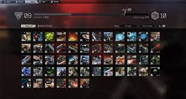

The flea market unlocks when you hit level 15. You can buy and sell things on the flea market. This is one way to get the most money for the items you sell. The way to sell something quickly is too price your item a little less then the middle price. People will go for the cheapest item possible. The flea market is one of the best ways to make money fast. You can buy almost any item off the flea market, and some of the items you will need so people price them at super high price.
This is a list of skills in the game that you level up when playing. Some skills are used more then others. The game has a stamina bar that goes down when you sprint. The more you play as either charcter the more it levels up. There is a strength skill that levels up when you ads, also when you are overweight from carring more then you can. Metabolism skill the list goes on and on. Each player has the same list of skill but level up individually.